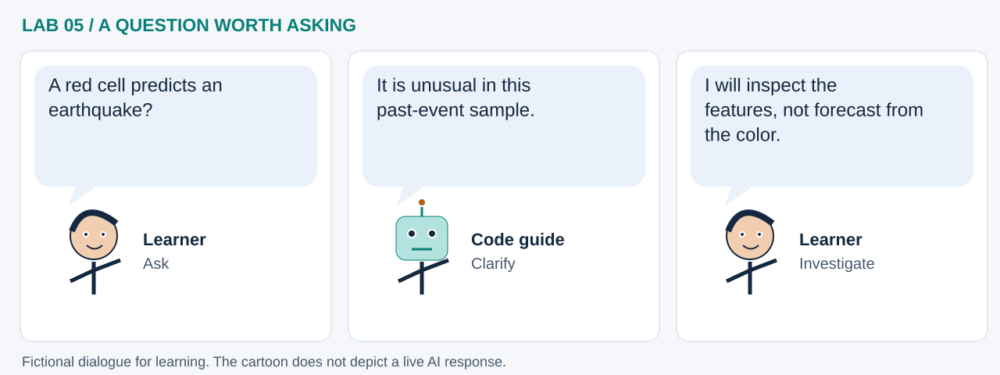

LAB 05 · 32-SECOND VISUAL WALKTHROUGH
Unusual is a question to investigate
Which spatial event summaries differ from the rest of this feed?
Silent, captioned storyboard. Use the player to pause, seek or change playback speed. On a small screen, use fullscreen or read the transcript below. The diagrams explain the method; they are not recordings of a live model run.
Download MP4 · Captions · Open infographic at full size

What runs here?
USGS events are downloaded; aggregation, H3 indexing and model fitting run locally in Pyodide.
Browser machine learning: Isolation Forest scores unusual H3 feature profiles.
Transcript and code landmarks
- 00–08s · Collect
Read event coordinates, magnitudes and depths from a changing monthly feed.
response.json() - 08–16s · Aggregate
Represent each occupied cell with event count, magnitude and depth summaries.
eq.groupby('h3') - 16–24s · Score
Assign higher values to unusual feature combinations in this sample.
-iso.score_samples(X) - 24–32s · Challenge
Inspect time window, missingness and depth before interpreting a high score.
agg.sort_values(...)
The common misconception

Read the cartoon dialogue
- A red cell predicts an earthquake?
- It is unusual in this past-event sample.
- I will inspect the features, not forecast from the color.
Try explaining it
Can a low-count cell have a high anomaly score?
Check your reasoning
Yes. Depth or magnitude combinations can differ from the rest even when few events occur.
Original educational illustrations and captions authored for this repository. See the notebook for data and software citations.